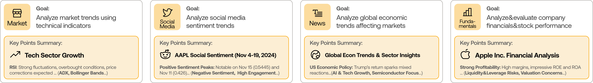
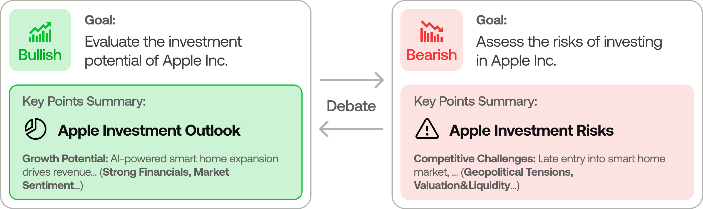
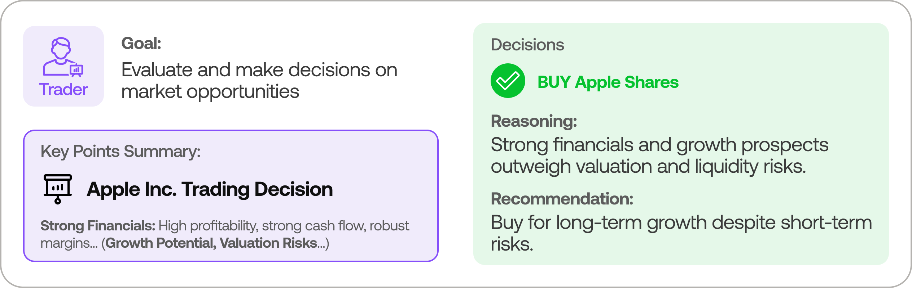
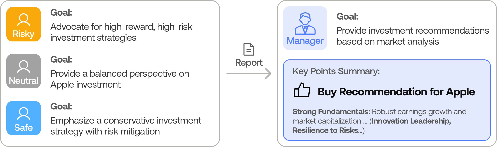
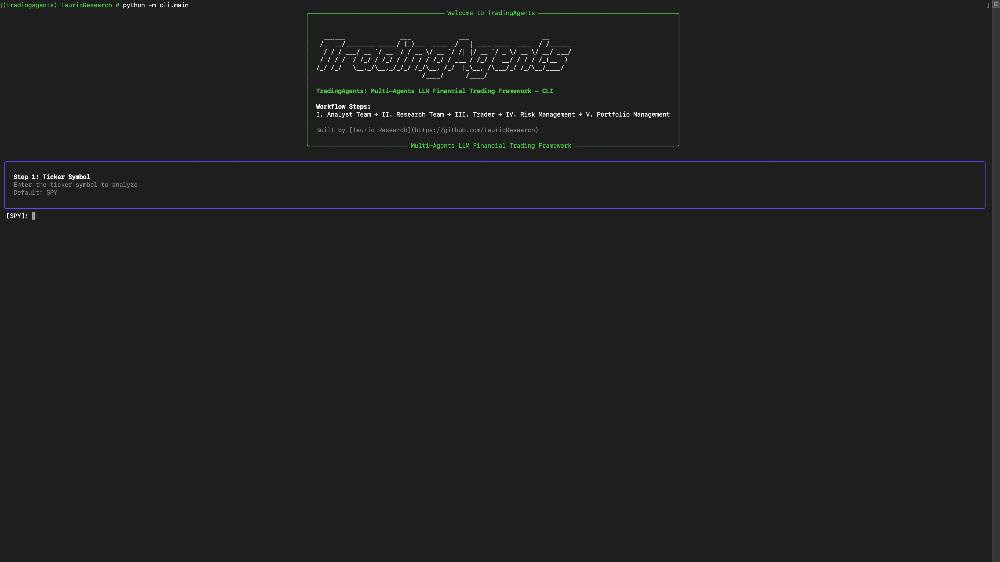

이 책을 읽는 법
이 문서는 TradingAgents를 한국어로 소개하는 소스 해설이다. 원본 프로젝트를 다른 제품으로 포장하지 않고, 현재 저장소의 Python 코드가 실제로 무엇을 조립하고 어떤 상태를 다음 에이전트에 넘기는지 따라간다.
분석 기준은 이 포크의 a33fd4c0f134485a43553a2c23a63cb14adbd88f 커밋이다. 모델 목록과
데이터 공급자는 계속 바뀔 수 있으므로, 각 장의 소스 링크는 이 커밋에 고정했다.
먼저 구분할 것
| 표현 | 이 책에서의 의미 |
|---|---|
| 에이전트 | 특정 역할의 prompt와 LLM 호출을 LangGraph node로 감싼 실행 단위 |
| 팀 | 여러 역할과 보고서를 하나의 고정된 의사결정 경로로 연결한 구조 |
| 토론 | 공유 state 안의 문자열 history를 번갈아 갱신하는 제한된 라운드 |
| 기억 | 과거 결정, 이후 수익률, LLM 반성을 Markdown log로 남겨 다음 실행에 주입하는 장치 |
| 재개 | LangGraph checkpoint를 ticker·날짜·graph shape에 맞춰 다시 읽는 기능 |
이 책이 다루는 것
- 분석가가 어떤 데이터 도구를 사용할 수 있는가
- 분석 보고서가 강세·약세 토론과 최종 결정으로 어떻게 축적되는가
- 데이터 공급자와 모델 공급자 차이가 어디에서 흡수되는가
- checkpoint와 decision log가 서로 다른 문제를 어떻게 해결하는가
- “멀티에이전트 금융 프레임워크”라는 표현을 소스 수준에서 어디까지 믿을 수 있는가
이 책이 하지 않는 것
- 특정 종목의 매수·매도 추천
- 논문의 수익률 재현이나 성능 보증
- LLM의 숨은 추론 복원
- role-play 결과를 독립적인 금융 전문가의 합의로 표현
- 실제 증권사 주문 체결로 오해할 수 있는 설명
권장 순서
처음 읽는다면 1장부터 6장까지 이어서 본다. 구현을 이식하려면 3장, 7장, 8장, 9장을 집중해서 읽는다. 실제 실행 전에 11장의 한계부터 확인해도 좋다.
1장: TradingAgents는 무엇인가
이 장의 질문
“여러 금융 전문가가 토론한다”는 설명을 코드로 바꾸면 무엇이 남는가?
TradingAgents는 현실의 트레이딩 회사를 모사한다. 시장·심리·뉴스·재무 분석가가 각자의 보고서를 만들고, 강세와 약세 연구자가 그 보고서를 두 방향으로 논박한다. 리서치 매니저가 투자 계획을 선택하고, 트레이더가 거래 제안을 작성한다. 마지막으로 세 가지 위험 관점이 제안을 검토하고 포트폴리오 매니저가 최종 등급을 낸다.

이 그림은 단순한 조직도가 아니다. GraphSetup.setup_graph()에 실제 node와 edge로
등록되는 순서다.
세 층으로 보면 쉽다
1. 근거 생산층
분석가가 가격, 기술 지표, 뉴스, 소셜 메시지, 재무제표, 거시경제, 예측시장을 읽고 보고서를 만든다. 여기서만 외부 데이터와 직접 만나는 경우가 많다.
2. 판단 조립층
리서처, 트레이더, 위험 분석가와 매니저는 앞에서 만든 보고서와 토론 history를 입력으로 받는다. 일부 관리 node는 외부 tool을 금지하고, prompt 안에 이미 들어온 근거만 사용한다.
3. 지속성층
최종 state는 JSON과 Markdown 보고서로 저장된다. 선택적으로 LangGraph checkpoint가 실행 중간을 저장하고, decision log가 과거 판단과 사후 수익률을 다음 분석에 전달한다.
“멀티에이전트”의 정확한 의미
각 역할은 별도의 prompt와 상태 갱신 함수를 갖는다. 그러나 런타임이 임의의 agent를 spawn하거나 agent가 다음 동료를 자유롭게 고르는 구조는 아니다.
| 있는 것 | 없는 것 |
|---|---|
| 역할별 LLM node | 런타임 team creation |
| 분석가별 도구 경계 | agent가 임의로 새 agent spawn |
| 고정된 토론 순서 | 자유 형식의 peer-to-peer mailbox |
| 공유된 typed state | 서로 독립된 장기 session |
| conditional edge | 목표를 보고 graph 자체를 다시 설계하는 기능 |
입력과 출력
한 번의 실행 입력은 보통 ticker, 분석 날짜, asset type, 선택한 analyst, 모델·데이터 설정이다. 출력은 주문 API 호출이 아니라 다음 두 값이다.
- 보고서와 토론 history를 모두 담은 final state
final_trade_decision을 다시 가공한 핵심 신호
CLI는 이를 저장하고 화면에 보여준다. Python API는 TradingAgentsGraph.propagate() 반환값을
직접 받을 수 있다.
핵심 정리
- TradingAgents는 금융 역할을 LangGraph node로 옮긴 연구용 workflow다.
- 외부 데이터 수집, 논쟁, 거래 제안, 위험 검토를 서로 다른 책임으로 분리한다.
- 실제 실행 순서는 동적으로 탄생하는 조직이 아니라 소스에 고정된 graph다.
- 결과는 텍스트 기반 판단과 보고서이며 실제 증권 주문 체결이 아니다.
원본 소스
2장: 한 번의 분석이 지나가는 길
시작은 graph보다 설정이 먼저다
TradingAgentsGraph 생성자는 설정을 dataflow 계층에 전달하고, 결과와 cache 디렉터리를 만든다.
그다음 같은 provider에서 두 모델 client를 만든다.
quick_thinking_llm: 분석가, 연구자, 트레이더, reflection처럼 반복 호출되는 역할deep_thinking_llm: 리서치 매니저와 포트폴리오 매니저처럼 결론을 조립하는 역할
이 구분은 서로 다른 provider를 섞는 기능이 아니라 같은 provider 안에서 빠른 모델과 깊은 모델을 나누는 기본 전략이다.
실행 전 준비
propagate(ticker, trade_date, asset_type)는 다음 순서로 들어간다.
특히 ticker identity는 LLM에 맡기지 않는다. resolve_instrument_identity()로 종목 정체를
먼저 확인하고 instrument_context로 만들어 모든 agent state에 넣는다. 같은 ticker를
서로 다른 회사로 해석하는 오류를 줄이기 위한 결정적 anchor다.
graph 실행 방식은 두 가지다
일반 모드
graph.invoke()가 최종 state 하나를 반환한다. 호출자는 중간 node를 보지 않고 완성된 결과를
받는다.
debug 모드
graph.stream()이 node별 delta를 순서대로 낸다. 구현은 각 chunk를 모아 마지막에 직접
merge한다. node가 새 message를 추가하지 않으면 이전 message가 반복될 수 있어, 화면 출력은
message type과 content signature가 달라질 때만 수행한다.
분석가 구간의 작은 loop
시장·뉴스·재무 분석가는 LLM이 tool call을 내는 동안 자기 ToolNode와 왕복한다. 더 이상 tool call이 없으면 report를 state에 남기고 message clear node를 지나 다음 분석가로 이동한다.
심리 분석가는 예외다. 뉴스·StockTwits·Reddit 데이터를 node 내부에서 먼저 가져와 prompt에 넣고 구조화 출력을 호출한다. 따라서 graph에는 social ToolNode가 존재하지만 정상 심리 분석 경로에서는 tool call을 만들지 않고 바로 report를 쓴다.
성공 이후 남는 것
성공한 실행은 세 종류의 기록을 만들 수 있다.
| 기록 | 목적 |
|---|---|
full_states_log_<date>.json | 모든 보고서와 토론 state 보존 |
| report tree | analyst, research, trader, risk, portfolio별 Markdown |
| memory log | 최종 결정과 이후 평가를 다음 실행에 연결 |
checkpoint는 성공하면 해당 thread row를 지운다. 그러므로 checkpoint DB는 완성된 역사 보관소가 아니라 중단된 실행을 재개하기 위한 임시 지속성이다.
핵심 정리
- 실행 전에 모델 client, 데이터 설정, instrument identity와 초기 state를 준비한다.
- analyst의 tool loop와 전체 trading graph는 서로 다른 두 수준의 흐름이다.
- debug streaming은 관찰 방식이지 동시 실행 보장이 아니다.
- 성공 결과, 장기 decision memory, 중단 복구 checkpoint는 서로 다른 파일과 책임을 가진다.
원본 소스
3장: 상태와 LangGraph
agent 사이를 이동하는 것은 state다
TradingAgents의 협업은 agent session끼리 직접 대화하는 방식이 아니다. 하나의 AgentState가
node를 지나며 report, debate history, trader plan과 final decision을 축적한다.
| state 영역 | 대표 필드 | 생산자 | 다음 소비자 |
|---|---|---|---|
| 실행 정체 | ticker, asset type, date, instrument context | 초기화 | 모든 역할 |
| 분석 보고서 | market, sentiment, news, fundamentals | 네 분석가 | bull·bear 연구자 |
| 투자 토론 | bull/bear/history/count/judge | 연구자·리서치 매니저 | trader |
| 거래 제안 | investment plan, trader plan | 매니저·trader | risk team |
| 위험 토론 | aggressive/conservative/neutral history | 위험 분석가 | portfolio manager |
| 장기 문맥 | past context | memory log | portfolio manager |
| 최종 판단 | final trade decision | portfolio manager | 저장·신호 처리 |
AgentState는 LangGraph의 MessagesState를 상속한다. messages는 analyst와 tool이 왕복할 때
필요하고, 별도 report field는 이후 역할에게 안정된 산출물을 전달한다.
분석가 순서는 실행 계획이 결정한다
build_analyst_execution_plan()은 사용자가 선택한 key를 AnalystNodeSpec으로 바꾼다.
각 spec에는 agent node, clear node, tool node, report key가 함께 있다.
AnalystNodeSpec(
key="market",
agent_node="Market Analyst",
clear_node="Msg Clear Market",
tool_node="tools_market",
report_key="market_report",
)
이 표가 중요한 이유는 문자열로 흩어진 네 이름을 하나의 계약으로 묶기 때문이다. 알 수 없는 key와 빈 analyst 목록은 graph를 만들기 전에 실패한다.
graph는 고정되고, 분기만 조건부다
conditional router가 반환할 수 있는 target은 DEBATE_PATH_MAP과
RISK_ANALYSIS_PATH_MAP에 전부 명시된다. 모델 응답의 speaker label이 흔들려도 LangGraph가
없는 edge를 찾아 crash하지 않게 하려는 방어다.
토론의 전환 조건
투자 토론은 count >= 2 * max_debate_rounds가 되면 리서치 매니저로 이동한다. 그 전에는
현재 응답이 Bull로 시작하면 Bear, 아니면 Bull이다.
위험 토론은 count >= 3 * max_risk_discuss_rounds가 되면 포트폴리오 매니저로 이동한다.
그 전에는 Aggressive → Conservative → Neutral 순서를 speaker 이름으로 판정한다.
“동적 토론”을 과장하지 않기
토론 내용은 LLM이 생성하므로 매번 달라진다. 그러나 참여자, 발언 순서와 종료 조건은 코드에 고정돼 있다. 따라서 이 프로젝트의 dynamic은 내용의 비결정성과 tool loop의 조건부 반복을 뜻한다. 실행 중 graph topology가 자라나는 것은 아니다.
핵심 정리
- 협업의 실체는 공유 typed state와 report field다.
- analyst plan은 선택 가능한 역할을 안전한 node 묶음으로 바꾼다.
- graph topology는 고정이고 tool call 및 라운드 종료만 조건부다.
- 문자열 speaker와 count가 토론을 제어하므로 자유로운 team runtime과는 다르다.
원본 소스
4장: 네 분석가와 도구
같은 LLM, 다른 정보 경계
네 분석가는 모두 “시장에 대해 말하는 모델”이 아니다. 각 node는 읽을 수 있는 데이터와 완성해야 하는 report field가 다르다.

| 분석가 | 주요 입력 | 외부 데이터 경로 | state 출력 |
|---|---|---|---|
| Market | OHLCV, 기술 지표, 검증 snapshot | ToolNode 왕복 | market_report |
| Sentiment | 뉴스, StockTwits, Reddit | node가 먼저 수집해 prompt에 삽입 | sentiment_report |
| News | 종목·글로벌 뉴스, 내부자, 거시, 예측시장 | ToolNode 왕복 | news_report |
| Fundamentals | 개요, 대차대조표, 현금흐름, 손익계산서 | ToolNode 왕복 | fundamentals_report |
Market Analyst: 숫자를 말하기 전에 검증한다
시장 분석가는 먼저 get_stock_data를 호출하고, 최대 여덟 개의 보완적인 지표를 고른다.
50·200일 SMA, 10일 EMA, MACD 계열, RSI, Bollinger band, ATR, VWMA가 prompt에 설명돼 있다.
중요한 안전장치는 마지막의 get_verified_market_snapshot이다. 정확한 OHLCV, 가격,
indicator value를 쓰기 전에 이 tool을 호출하고 다른 출력과 충돌하면 임의로 숫자를
화해시키지 말고 불일치를 표시하게 한다.
이 규칙은 모델의 금융 능력을 높이는 마법이 아니다. 정확한 숫자의 source of truth를 하나 지정해, 그보다 약한 도구 출력이나 모델 기억이 숫자를 덮지 못하게 하는 prompt 계약이다.
Sentiment Analyst: tool call 대신 사전 수집
현재 심리 분석가는 이전 social_media_analyst의 이름만 바꾼 것이 아니다. 소스 주석은
과거 prompt가 소셜 분석을 요구하면서 실제로는 Yahoo 뉴스만 제공해 Reddit·X·StockTwits
내용을 지어내게 했다고 설명한다.
현재 node는 LLM 호출 전에 세 자료를 직접 수집한다.
- Yahoo Finance 뉴스
- ticker cashtag 기준 StockTwits 메시지와 Bullish/Bearish tag
wallstreetbets,stocks,investing의 Reddit 게시물
그다음 source별 block을 prompt에 넣고 외부 tool 호출을 금지한다. 출력은 band, 0~10 score, confidence와 narrative를 갖는 구조화 report다. 자료가 부족하면 confidence를 낮추고 placeholder를 숨기지 않도록 지시한다.
News Analyst: 사건의 범위를 넓힌다
뉴스 분석가는 종목 뉴스뿐 아니라 글로벌 뉴스, 내부자 거래, FRED 거시 지표와 Polymarket
확률을 사용할 수 있다. 하지만 모든 자료가 핵심 데이터는 아니다. 거시·예측시장처럼
선택적인 enrichment가 실패하면 DATA_UNAVAILABLE을 보고 계속할 수 있다.
Fundamentals Analyst: 기업 재무를 분리한다
재무 분석가는 company fundamentals, balance sheet, cashflow와 income statement를 읽는다. 주식이 아닌 crypto asset에서는 기업 재무가 없을 수 있다. 이후 bull/bear prompt도 이 경우를 “사용 불가할 수 있는 asset fundamentals”로 표현한다.
tool loop와 report 경계
시장·뉴스·재무 분석가는 tool call이 있는 동안 report를 비워 둔다. LLM이 더 이상 tool을 요청하지 않은 최종 응답만 report field가 된다. 이 때문에 tool을 호출하는 중간 message와 완성된 분석 보고서를 구분할 수 있다.
분석가가 끝나면 message clear node를 거쳐 다음 분석가로 간다. 보고서는 state에 남지만
tool call 대화가 다음 분석가의 messages에 무한히 누적되지 않는다.
핵심 정리
- 역할의 차이는 이름보다 데이터 도구와 report field에서 생긴다.
- Market Analyst는 정확한 수치 주장을 verified snapshot에 고정한다.
- Sentiment Analyst는 소셜 데이터를 미리 수집해 prompt와 evidence의 불일치를 줄였다.
- 선택 데이터 실패와 핵심 데이터 실패는 서로 다르게 처리한다.
- tool을 호출하는 중간 message와 최종 report는 별도 상태다.
원본 소스
5장: 강세·약세 토론과 리서치 매니저
보고서를 반대 방향으로 읽는다
분석가들이 네 개의 report를 만들면 Bull Researcher가 먼저 강세 논리를 쓴다. Bear Researcher는 같은 자료와 직전 강세 주장을 읽고 약세 논리를 만든다. 다음 Bull은 다시 직전 Bear를 반박한다.

한 history, 세 가지 view
InvestDebateState에는 다음 문자열이 따로 있다.
bull_history: 강세 주장만 축적bear_history: 약세 주장만 축적history: 발언 순서대로 합친 전체 토론current_response: 다음 역할이 직접 반박할 마지막 발언judge_decision: 리서치 매니저의 최종 투자 계획count: 종료 라우팅에 쓰는 발언 수
agent끼리 별도 message bus를 쓰는 것이 아니라, node가 이 dictionary를 복사·갱신해 다음 node에 넘긴다.
토론 횟수는 prompt가 아니라 router가 제한한다
max_debate_rounds=1이면 조건은 count >= 2다. Bull과 Bear가 한 번씩 말한 뒤 리서치
매니저로 간다. 라운드를 늘리면 두 발언씩 추가된다.
상한이 graph router에 있으므로 모델이 “더 토론하자”고 써도 무한히 이어지지 않는다. 반대로 두 연구자가 일찍 합의했다고 해도 현재 구현은 합의 의미를 파싱해 조기 종료하지 않는다.
Research Manager는 심판이자 압축기다
리서치 매니저는 전체 토론 history와 instrument context만 읽고 ResearchPlan schema를
만든다. 판단 등급은 다음 다섯 가지다.
| 등급 | 의미 |
|---|---|
| Buy | 강한 강세 확신 |
| Overweight | 노출을 점진적으로 늘릴 우호적 시각 |
| Hold | 근거가 실제로 균형일 때 유지 |
| Underweight | 노출 축소 |
| Sell | 회피 또는 청산 |
이 node에는 NO_EXTERNAL_TOOLS가 들어간다. 리서치 매니저가 토론에 없는 새 사실을 검색해
판결을 바꾸는 대신, 이미 수집된 근거와 주장만 정리하게 한다.
토론이 주는 것과 주지 않는 것
주는 것
- 같은 보고서에서 상반된 thesis를 강제로 추출
- 직전 반론을 prompt에 넣어 단순한 독립 요약보다 충돌을 드러냄
- manager에게 전체 history와 명시적 rating scale 제공
- 라운드 수를 비용·깊이 knob로 사용
주지 않는 것
- 독립적인 데이터 수집 기관 두 곳의 합의
- 미래 수익률에 대한 통계적 신뢰도
- 서로 다른 모델이 만든 다양성
- 숨은 reasoning 과정
핵심 정리
- Bull과 Bear는 공유 history를 정해진 순서로 갱신한다.
- 토론 횟수는 count와 설정으로 강제된다.
- 리서치 매니저는 새 데이터를 찾지 않고 토론을 구조화된 투자 계획으로 압축한다.
- 반대 역할은 관점의 다양성을 만들지만 독립된 금융 전문가 합의를 증명하지 않는다.
원본 소스
6장: 트레이더·리스크 팀·포트폴리오 매니저
투자 계획을 거래 제안으로 바꾼다
Trader node는 네 분석 보고서를 처음부터 다시 읽지 않는다. 리서치 매니저가 압축한
investment_plan과 instrument context를 받아 TraderProposal을 만든다.

prompt는 Buy, Sell 또는 Hold 같은 구체적 제안을 요구하지만 외부 tool 사용을 금지한다. 따라서 trader는 새 시장 데이터를 조사하는 agent가 아니라, 연구 조직의 결론을 실행 가능한 문장으로 바꾸는 역할이다.
한 번 더 반대 방향으로 검토한다
Trader 뒤에는 세 위험 역할이 있다.
| 역할 | 질문 |
|---|---|
| Aggressive Analyst | 더 큰 기회와 감수 가능한 위험은 무엇인가 |
| Conservative Analyst | 손실, 불확실성, 방어가 필요한 지점은 무엇인가 |
| Neutral Analyst | 두 극단 사이에서 비례적인 위험 판단은 무엇인가 |

이들도 하나의 RiskDebateState에 발언 history를 축적한다. 기본 라우팅은 Aggressive →
Conservative → Neutral이며 count >= 3 * max_risk_discuss_rounds가 되면 Portfolio
Manager로 간다.
Portfolio Manager가 보는 것
최종 관리자는 다음 입력을 한 prompt에서 받는다.
- Research Manager의 investment plan
- Trader의 transaction proposal
- 세 risk analyst의 전체 debate history
- 같은 ticker의 이전 결정과 다른 ticker의 최근 reflection
- 결정적으로 확인한 instrument context
결과는 PortfolioDecision schema로 요청하고 Markdown으로 다시 렌더링한다. rating scale은
Research Manager와 같은 다섯 단계다.
구조화 출력은 최종 판단의 형태를 고정한다
Research Manager, Trader, Portfolio Manager는 Pydantic schema를 사용한다. provider가 구조화 출력을 지원하지 않거나 JSON이 깨지면 같은 prompt로 free-text를 한 번 호출한다.
이 fallback은 성공을 조작하는 것이 아니라 출력 계약을 낮추는 것이다. warning이 log에 남고, 이후 consumer는 Markdown text를 계속 받을 수 있다. 다만 typed field 보장은 사라진다.
실제 주문을 체결하는가
현재 TradingAgentsGraph._run_graph()는 final_trade_decision을 저장하고
process_signal()로 핵심 신호를 뽑아 반환한다. brokerage API에 주문을 보내는 node는 이
graph에 없다.
왜 두 번의 검토가 있는가
리서치 토론은 방향성 thesis를 검토한다. 위험 토론은 이미 선택된 거래 제안을 노출과 손실 관점에서 다시 검토한다. 이 둘을 하나로 합치지 않아 다음을 구분할 수 있다.
- 좋은 회사인가
- 지금 유리한 방향인가
- 이 제안을 현재 위험 조건에서 감수할 수 있는가
- 과거 비슷한 판단에서 무엇을 배웠는가
핵심 정리
- Trader는 연구 계획을 거래 제안으로 번역하며 새 데이터를 수집하지 않는다.
- 세 위험 역할은 고정된 순서와 라운드 상한으로 제안을 검토한다.
- Portfolio Manager는 현재 토론과 과거 reflection을 함께 사용한다.
- 구조화 출력 실패 시 free-text로 낮아지며 그 사실이 warning으로 남는다.
- 최종 판단은 텍스트 산출물이지 실제 주문 체결이 아니다.
원본 소스
7장: 데이터 공급자와 근거
LLM보다 먼저 데이터 계약을 읽어야 한다
금융 agent가 자신감 있게 말해도 입력 데이터가 없거나 잘못된 종목을 읽었다면 결과는 무의미하다. TradingAgents의 dataflow 계층은 tool 이름과 실제 vendor 구현 사이를 명시적으로 연결한다.
도구 범주
| 범주 | 도구 | 기본 공급자 |
|---|---|---|
| 가격 | get_stock_data | yfinance |
| 기술 지표 | get_indicators | yfinance |
| 재무 | fundamentals, balance sheet, cashflow, income | yfinance |
| 뉴스 | ticker, global, insider | yfinance |
| 거시경제 | get_macro_indicators | FRED |
| 예측시장 | get_prediction_markets | Polymarket |
Alpha Vantage는 가격·지표·재무·뉴스의 대체 구현을 제공한다. config는 범주 단위 공급자를
정하고, tool_vendors는 특정 tool만 덮어쓸 수 있다.
명시하지 않은 fallback은 사용하지 않는다
route_to_vendor()의 핵심 규칙은 단순하다.
configured: "yfinance"
-> yfinance만 호출
configured: "yfinance,alpha_vantage"
-> 적힌 순서로 호출
configured: "default"
-> 해당 method의 모든 구현 사용
과거처럼 primary가 실패했다고 사용자가 고르지 않은 공급자로 조용히 바꾸면, 한 보고서 안에 서로 다른 기준과 시점의 숫자가 섞일 수 있다. 현재 코드는 explicit vendor list 자체를 fallback chain으로 취급한다.
실패를 어떻게 표현하는가
NoMarketDataError
모든 공급자가 해당 symbol에 쓸 수 있는 데이터를 찾지 못하면
NO_DATA_AVAILABLE sentinel을 반환한다. canonical symbol, stale 여부와 구체적인 이유도
붙는다. prompt는 이 문자열을 보고 값을 추정하지 말아야 한다.
core category 오류
가격·재무·뉴스처럼 결정의 핵심인 범주에서 network나 auth 오류가 나면 실제 exception을 올린다. 빈 자료로 성공한 것처럼 계속하지 않는다.
optional enrichment 오류
거시경제와 예측시장은 보조 맥락이다. 실패하면 DATA_UNAVAILABLE을 반환하고 agent가 그
자료 없이 진행하게 한다. 이 경우에도 log에는 원래 오류가 남는다.
ticker identity와 verified snapshot
분석 시작 시 종목 identity를 결정적으로 확인해 instrument_context를 만든다. 예를 들어
ticker만 보고 모델이 다른 회사를 떠올리는 일을 줄인다.
Market Analyst는 별도로 verified snapshot을 호출해 정확한 가격·거래량·지표 수치를 고정한다. 따라서 세 층이 있다.
- symbol normalization
- instrument identity
- 분석 날짜 기준 verified market snapshot
이 세 단계가 있어도 미래 수익률이나 뉴스의 해석이 정답이 되는 것은 아니다. 다만 “어느 종목의 어떤 수치를 분석했는가”를 더 안정적으로 만든다.
날짜와 look-ahead
과거 날짜를 분석할 때 미래 정보가 들어가면 backtest 의미가 깨진다. 프로젝트는 뉴스와 Alpha Vantage fundamentals에서 분석 날짜 경계를 지키려는 필터를 갖고 있다. 그러나 live 뉴스·소셜 source가 시간이 지나며 달라지는 문제까지 사라지는 것은 아니다.
핵심 정리
- tool 이름과 vendor 구현은 중앙 routing table로 연결된다.
- fallback은 설정에 적힌 공급자 안에서만 일어난다.
- 핵심 데이터 실패는 오류로, 선택 데이터 실패는 명시적 sentinel로 남는다.
- ticker identity와 verified snapshot은 정확한 대상·숫자를 고정한다.
- 데이터 grounding은 판단의 재현성을 돕지만 시장 예측의 정확성을 보증하지 않는다.
원본 소스
8장: 모델 공급자와 구조화 출력
provider abstraction은 모델을 같게 만들지 않는다
TradingAgents는 OpenAI, Anthropic, Google, Azure, Bedrock과 여러 OpenAI-compatible
endpoint를 지원한다. 공통 factory가 같은 BaseLLMClient 계약을 돌려주지만, reasoning
설정, structured output와 인증 방식까지 같아지는 것은 아니다.
factory는 provider module을 lazy import한다. test collection이나 단순 import 때 모든 무거운 SDK를 불러오고 API key를 요구하지 않기 위한 선택이다.
quick model과 deep model
기본 config는 두 model ID를 갖는다.
| 모델 슬롯 | 기본 역할 |
|---|---|
| quick | analyst, bull/bear, trader, risk analyst, reflection |
| deep | research manager, portfolio manager |
사용자는 provider와 두 model을 바꿀 수 있다. 같은 역할을 더 큰 모델로 바꾼다고 데이터 근거가 늘어나는 것은 아니다. tool과 prompt 경계는 graph 코드가 결정한다.
provider별 사고 설정
생성자는 provider에 따라 다른 설정을 전달한다.
- Google:
thinking_level - OpenAI:
reasoning_effort - Anthropic:
effort - 공통:
temperature, 명시한llm_max_retries
temperature=None이면 provider 기본값을 유지한다. reasoning-first 모델은 temperature를
무시할 수 있어 0으로 설정해도 byte-identical 결과를 보장하지 않는다.
모델 카탈로그의 역할
model_catalog.py는 CLI 표시와 model validation이 공유하는 목록이다. 자주 바뀌는 hosted
provider와 OpenAI-compatible server는 오래된 목록을 박제하지 않고 Custom model ID만
제공하기도 한다.
이 카탈로그는 “이 모델이 실제 계정에서 사용 가능하다”는 원격 readiness 증명이 아니다. CLI 선택 후보와 알려진 ID의 로컬 계약이다. endpoint 권한, 계정 entitlement와 모델 폐기는 실제 호출에서 드러난다.
구조화 출력과 free-text fallback
Sentiment Analyst, Research Manager, Trader, Portfolio Manager는 Pydantic schema를
with_structured_output()에 연결한다.
fallback의 장점은 약한 local model이나 일시적인 JSON 오류 때문에 전체 graph가 멈추는 일을 줄이는 것이다. 단점은 consumer가 typed field를 받았다고 확신할 수 없다는 점이다. 소스는 fallback 때 warning을 남겨 이 차이를 숨기지 않는다.
관리 node가 tool을 쓰지 않는 이유
NO_EXTERNAL_TOOLS는 “prompt에 제공된 근거만 사용하고, 없으면 없다고 말하라”고 요구한다.
Research Manager, Trader, Portfolio Manager가 새 검색을 시작하면 analyst report와 최종
결론 사이의 evidence chain이 흐려진다.
이 제한은 모든 agent에 적용되지 않는다. analyst는 자신의 tool을 써야 한다. 역할별로 tool 권한이 다른 것이 핵심이다.
여러 provider가 같은 결과를 내는가
아니다. schema와 state shape가 같아도 모델은 다음에서 달라질 수 있다.
- tool 선택과 호출 순서
- 긴 보고서에서 중요하다고 고르는 근거
- 반론의 강도와 rating
- 구조화 출력 지원 방식
- reasoning 비용과 latency
- retry와 error shape
따라서 provider adapter는 호출 표면을 공통화하지만 판단 의미를 표준화하지 않는다.
핵심 정리
- LLM factory는 provider별 client 생성을 공통 진입점으로 묶는다.
- quick/deep 모델은 비용과 판단 역할을 나누는 설정이다.
- provider별 reasoning knob는 공통 이름으로 억지 통합되지 않는다.
- 구조화 출력 실패는 warning 후 free-text로 낮아진다.
- 모델 카탈로그는 원격 사용 가능성이나 동일한 행동을 보증하지 않는다.
원본 소스
9장: 기억, 반성, 체크포인트 재개
두 지속성은 목적이 다르다
TradingAgents에는 “이전 실행을 기억한다”는 말로 묶기 쉬운 두 기능이 있다.
| 기능 | 저장소 | 목적 | 성공 후 |
|---|---|---|---|
| decision memory | append-only Markdown | 과거 판단·실제 수익률·reflection을 다음 분석에 사용 | 계속 보존 |
| checkpoint | ticker별 SQLite | 중단된 LangGraph 실행을 같은 지점에서 재개 | 해당 thread 정리 |
checkpoint를 장기 기억이라고 부르거나 decision log를 중단 복구 state라고 부르면 안 된다.
Decision memory의 두 단계
Phase A: 결정 직후
실행이 끝나면 최종 판단을 다음 형태로 append한다.
[날짜 | ticker | rating | pending]
DECISION:
최종 판단 본문
같은 날짜와 ticker의 pending entry가 이미 있으면 중복 append하지 않는다.
Phase B: 다음 같은 ticker 실행 전
이전 분석 날짜로부터 기본 5 거래일 뒤의 실제 수익률을 yfinance에서 구한다. 지역별 benchmark map으로 SPY, Nikkei, Hang Seng 같은 비교 지수를 선택하고 raw return과 alpha를 계산한다.
그 결과를 quick model의 reflection prompt에 넣고, pending tag를 실제 수익률과 reflection이 있는 resolved entry로 바꾼다.
가격이 아직 없거나 network 오류가 나면 entry는 pending으로 남아 다음 실행에서 다시 시도한다. 다른 ticker의 pending은 그 ticker를 다시 분석할 때까지 처리하지 않는다.
다음 판단에 무엇을 넣는가
get_past_context()는 resolved entry만 읽는다.
- 같은 ticker 최근 5개: 결정과 reflection 전체
- 다른 ticker 최근 3개: reflection 중심
이 문자열은 초기 state의 past_context가 되고 Portfolio Manager prompt에 들어간다.
모델 weight가 바뀌는 학습이 아니라, 명시적으로 저장한 과거 문장을 다음 prompt에 추가하는
retrieval memory다.
Checkpoint thread의 정체
checkpoint는 ticker별 SQLite DB에 저장된다. thread ID는 다음 입력을 hash한다.
ticker + 분석 날짜 + analyst 선택 + debate 깊이 + risk 깊이 + asset type
같은 ticker와 날짜라도 graph shape가 바뀌면 이전 checkpoint를 재사용하지 않는다. 예를 들어 분석가를 네 명에서 두 명으로 줄였는데 옛 node state를 이어 받는 오류를 막는다.
재개 lifecycle
checkpoint_enabled를 확인한다.- ticker별 SQLite saver를 연다.
- saver를 넣어 workflow를 다시 compile한다.
- 같은 thread의 최신 step이 있으면 resume log를 남긴다.
- graph를 실행한다.
- 성공하면 해당 thread의 checkpoint row를 지운다.
- DB connection을 닫고 checkpoint 없는 graph로 되돌린다.
exception이나 프로세스 중단으로 성공 정리까지 가지 못했을 때만 다음 실행에 resume할 state가 남는다.
원자성과 범위
memory log update는 temp file을 쓴 뒤 replace한다. 한 번의 crash로 전체 Markdown log가 깨지는 위험을 줄인다. 설정된 최대 entry 수를 넘으면 오래된 resolved entry만 제거하고, 아직 평가하지 않은 pending은 보존한다.
checkpoint는 ticker별 DB를 사용해 서로 다른 ticker가 같은 SQLite file을 다투지 않게 한다. 하지만 한 graph 실행의 모든 외부 API side effect를 되돌리는 transaction은 아니다.
핵심 정리
- decision memory는 성공한 판단을 다음 분석에 학습 문맥으로 전달한다.
- 실제 수익률과 LLM reflection은 사실 수준이 다르다.
- checkpoint는 중단 복구용이며 성공 시 지워진다.
- graph shape signature가 맞아야 같은 checkpoint를 재개한다.
- “memory”는 모델 학습이 아니라 파일 기반 retrieval prompt다.
원본 소스
10장: CLI, 패키지 API, 보고서
같은 graph를 두 표면에서 사용한다
TradingAgents의 제품 표면은 크게 interactive CLI와 Python package API다. 둘 다
TradingAgentsGraph를 사용한다.
CLI
tradingagents
python -m cli.main
사용자는 ticker, 날짜, analyst, provider, quick/deep model, debate 깊이와 출력 언어를 고른다. Typer가 command를 정의하고 Rich와 questionary가 terminal UI를 만든다.

Python API
from tradingagents.default_config import DEFAULT_CONFIG
from tradingagents.graph.trading_graph import TradingAgentsGraph
config = DEFAULT_CONFIG.copy()
config["llm_provider"] = "anthropic"
config["output_language"] = "Korean"
graph = TradingAgentsGraph(config=config)
state, decision = graph.propagate("NVDA", "2026-01-15")
report = graph.save_reports(state, "NVDA")
이 예제는 구조를 보여 주기 위한 것이며 실제 실행에는 provider key와 data source의 network 접근이 필요하다.
설정 우선순위
기본값은 DEFAULT_CONFIG에 있다. TRADINGAGENTS_* 환경 변수는 같은 config key를 덮어쓴다.
boolean, int, float는 기존 default type을 기준으로 변환하고 잘못된 값은 startup에서
실패한다.
대표 환경 변수는 다음과 같다.
TRADINGAGENTS_LLM_PROVIDERTRADINGAGENTS_DEEP_THINK_LLMTRADINGAGENTS_QUICK_THINK_LLMTRADINGAGENTS_OUTPUT_LANGUAGETRADINGAGENTS_MAX_DEBATE_ROUNDSTRADINGAGENTS_MAX_RISK_ROUNDSTRADINGAGENTS_CHECKPOINT_ENABLEDTRADINGAGENTS_TEMPERATURETRADINGAGENTS_LLM_MAX_RETRIES
잘못 쓴 treu를 false로 조용히 처리하지 않고 정확한 오류를 내는 것이 unattended run에서
중요하다.
보고서 tree
write_report_tree()는 CLI와 package API가 함께 사용한다.
reports/<run>/
├── 1_analysts/
│ ├── market.md
│ ├── sentiment.md
│ ├── news.md
│ └── fundamentals.md
├── 2_research/
│ ├── bull.md
│ ├── bear.md
│ └── manager.md
├── 3_trading/
│ └── trader.md
├── 4_risk/
│ ├── aggressive.md
│ ├── conservative.md
│ └── neutral.md
├── 5_portfolio/
│ └── decision.md
└── complete_report.md
한 파일의 최종 답만 저장하지 않고 조직의 각 단계 산출물을 남긴다. 이는 어느 역할이 어떤 판단을 추가했는지 사람이 읽는 데 유리하다.
final state JSON과 report tree의 차이
| 산출물 | 장점 | 주의점 |
|---|---|---|
| full state JSON | field와 history 구조 보존 | 사람이 읽기 길고 내부 state에 가까움 |
| Markdown tree | 역할별 검토와 공유가 쉬움 | node execution metadata는 없음 |
| complete report | 한 문서로 전체 결론 확인 | 중간 tool call은 보이지 않음 |
| memory log | 여러 실행 사이의 결과·반성 연결 | 현재 run 전체 transcript가 아님 |
보고서가 있다는 사실은 tool call이 모두 성공했다는 observability 증거가 아니다. tool latency, retry, provider raw response를 연구하려면 별도 callback이나 tracing이 필요하다.
Docker 표면
Dockerfile과 docker-compose.yml은 CLI 실행 환경을 격리한다. Ollama profile도 제공한다.
그러나 container를 쓴다고 API key, 외부 vendor rate limit, live data 변동이 사라지지는
않는다.
출력 언어
output_language는 analyst report와 최종 결정에 language instruction을 넣는다. 내부 토론
품질을 위해 일부 prompt 구조와 label은 영어 contract를 유지한다. speaker prefix가 router에
쓰이는 구간이 있으므로 단순 번역은 control flow에도 영향을 줄 수 있다.
핵심 정리
- CLI와 Python API는 같은
TradingAgentsGraph를 사용한다. - 환경 변수 override는 type 오류를 조용히 삼키지 않는다.
- report tree는 역할별 산출물을 보존하지만 raw 실행 trace는 아니다.
- Docker는 실행 환경을 묶을 뿐 외부 데이터와 모델의 불확실성을 제거하지 않는다.
- 출력 언어와 내부 routing label은 같은 문제가 아니다.
원본 소스
11장: 무엇을 증명하고 무엇을 증명하지 못하는가
이 프로젝트가 실제로 보여 주는 것
TradingAgents는 멀티에이전트 금융 분석을 연구하기 좋은 구조를 제공한다.
- 한 문제를 데이터 전문 영역별 report로 나눌 수 있다.
- 같은 근거에 강세와 약세 역할을 적용해 반론을 강제할 수 있다.
- trader 판단과 risk 판단을 다른 state 단계로 분리할 수 있다.
- final decision 이전의 보고서와 토론을 파일로 검토할 수 있다.
- 중단된 graph를 같은 shape에서 재개할 수 있다.
- 과거 판단의 사후 수익률과 reflection을 다음 prompt에 넣을 수 있다.
- 여러 모델·데이터 공급자를 같은 graph contract 아래 비교할 수 있다.
이 항목들은 소스와 실행 산출물로 확인할 수 있다.
증명하지 못하는 것
수익성
여러 agent가 합의했다고 미래 수익률이 좋아지는 것은 아니다. backtest 결과는 모델, 날짜, 데이터, temperature와 prompt에 민감하다. 원 논문 수치를 현재 코드와 현재 model로 자동 재현한다고 볼 수 없다.
독립 전문가 합의
역할들이 같은 provider와 같은 quick model을 사용할 수 있다. Bull, Bear, risk persona는 서로 다른 prompt를 받지만 독립된 기관이나 사람은 아니다.
실시간 정확성
가격 snapshot을 검증해도 뉴스·Reddit·StockTwits는 시간이 흐르면 달라진다. historical analysis date를 고정해도 live social source의 결과까지 고정되지는 않는다.
실제 주문 실행
graph의 terminal output은 final_trade_decision과 가공된 signal이다. broker order ID,
account balance 변화, fill event는 이 repository의 final node에서 나오지 않는다.
모델 학습
decision memory는 Markdown을 다시 prompt에 넣는 retrieval이다. 모델 parameter를 update하는 training이 아니다.
configured, observed, inferred
이 프로젝트를 평가할 때 세 수준을 구분하면 과장이 줄어든다.
| 수준 | 예 |
|---|---|
| configured | 네 analyst를 선택함, debate round를 2로 설정함 |
| observed | 특정 tool result가 왔음, Bull/Bear history가 저장됨, checkpoint step을 읽음 |
| inferred | 이 토론이 위험 인식을 개선했음, reflection이 다음 판단에 도움을 줌 |
configured role이 존재한다고 실제 node가 성공한 것은 아니다. final report가 있다고 모든 vendor call의 원본과 retry를 관측한 것도 아니다.
비용 구조
기본 네 analyst, bull/bear, manager, trader, 세 risk 역할과 portfolio manager를 합치면 한 번의 실행에 여러 LLM 호출이 필요하다. analyst tool loop와 debate round를 늘리면 호출 수와 입력 token이 함께 증가한다.
max_recur_limit, debate round, risk round, provider retry budget은 서로 다른 상한이다.
하나를 줄여도 다른 loop가 자동으로 줄어드는 것은 아니다.
재현성의 층
같은 ticker와 날짜로 두 번 실행했는데 문장이 달라지는 것은 이 architecture의 자연스러운 특성이다. 연구할 때는 config, model ID, 분석 날짜, source timestamp, raw tool result와 final report를 함께 남겨야 한다.
안전한 학습 실험
- 실제 매매가 아닌 과거 날짜와 paper portfolio를 사용한다.
- analyst 수와 debate round를 고정해 비교한다.
- 한 번에 model 또는 data vendor 하나만 바꾼다.
- final rating뿐 아니라 analyst report와 반론을 함께 비교한다.
- unavailable sentinel과 fallback warning을 실패 데이터로 보존한다.
- 사후 수익률과 model reflection을 별도 열로 기록한다.
- 결과를 금융 조언이 아니라 agent workflow 관찰로 설명한다.
이 소스에서 배울 가장 중요한 설계
역할 이름을 많이 만드는 것이 멀티에이전트 설계의 핵심이 아니다. 다음 네 가지가 실제 구조를 만든다.
- 각 역할이 읽을 수 있는 evidence
- state에 남겨야 할 artifact
- 다음 역할로 이동하는 router
- 중단·데이터 부재·schema 실패를 드러내는 failure contract
핵심 정리
- 이 코드는 멀티에이전트 의사결정 workflow를 연구하는 scaffold다.
- 역할 수, 토론 횟수, model 다양성은 성과 보증이 아니다.
- 설정, 실제 실행, 교육적 해석을 구분해야 한다.
- 최종 판단보다 evidence, state, router와 failure contract를 함께 읽어야 한다.
원본 자료
소스 지도와 출처
분석 기준
- 한국어 해설 저장소: nfbs2000/speaky-TradingAgents
- 원 프로젝트: TauricResearch/TradingAgents
- 고정 커밋:
a33fd4c0 - package version:
0.3.1 - 라이선스: Apache License 2.0
- 논문: TradingAgents: Multi-Agents LLM Financial Trading Framework
이 사이트는 원본 코드와 문서를 대체하지 않는다. 소스 구조를 한국어 학습 순서로 다시 설명하며, 그림은 원 프로젝트가 저장소에 포함한 자산을 사용한다.
기능별 진입점
| 궁금한 것 | 먼저 볼 파일 | 함께 볼 파일 |
|---|---|---|
| 전체 lifecycle | trading_graph.py | propagation.py, signal_processing.py |
| graph node와 edge | setup.py | conditional_logic.py |
| 공유 state | agent_states.py | schemas.py |
| analyst 순서 | analyst_execution.py | setup.py |
| 시장 grounding | market_analyst.py | market_data_validator.py |
| 심리 source | sentiment_analyst.py | reddit.py, stocktwits.py |
| 강세·약세 토론 | bull_researcher.py | bear_researcher.py |
| 최종 판단 | portfolio_manager.py | trader.py, risk_mgmt/ |
| vendor routing | interface.py | config.py, errors.py |
| model routing | factory.py | model_catalog.py, capabilities.py |
| schema fallback | structured.py | schemas.py |
| 장기 decision memory | memory.py | reflection.py |
| 중단 재개 | checkpointer.py | trading_graph.py |
| 사람이 읽는 결과 | reporting.py | CLI stats_handler.py |
장별 핵심 문장
| 장 | 한 문장 |
|---|---|
| 1 | 현실의 trading firm 역할을 고정된 LangGraph workflow로 옮겼다. |
| 2 | 한 실행은 identity, analyst tool loop, 토론, 최종 판단, 저장을 순서대로 통과한다. |
| 3 | agent 협업의 실체는 공유 typed state와 conditional edge다. |
| 4 | 역할의 의미는 사용할 수 있는 데이터와 남겨야 할 report에서 생긴다. |
| 5 | Bull/Bear는 같은 evidence를 반대 thesis로 읽고 manager가 계획으로 압축한다. |
| 6 | 거래 방향과 위험 수용 여부를 별도 토론으로 나눈다. |
| 7 | vendor fallback은 명시된 chain 안에서만 일어나며 데이터 부재를 숨기지 않는다. |
| 8 | provider adapter는 호출을 묶지만 모델 행동을 같게 만들지는 않는다. |
| 9 | decision memory는 장기 문맥이고 checkpoint는 중단 복구다. |
| 10 | CLI와 API는 같은 graph를 쓰며 역할별 Markdown 보고서를 남긴다. |
| 11 | 이 프레임워크는 구조화된 연구 도구이지 수익이나 실제 주문을 보장하지 않는다. |
라이선스와 번역 범위
원 프로젝트는 Apache-2.0으로 공개돼 있다. 이 한국어 해설은 구조와 의미를 설명하기 위해 짧은 identifier와 작은 code shape를 인용하고 원본 파일을 직접 연결한다. 원본 source, 저자, 논문과 라이선스 표시는 그대로 보존한다.
모델과 provider 목록은 시간이 지나면 달라질 수 있다. 새 release를 읽을 때는
CHANGELOG.md, pyproject.toml, default_config.py, model_catalog.py를 먼저 비교한다.